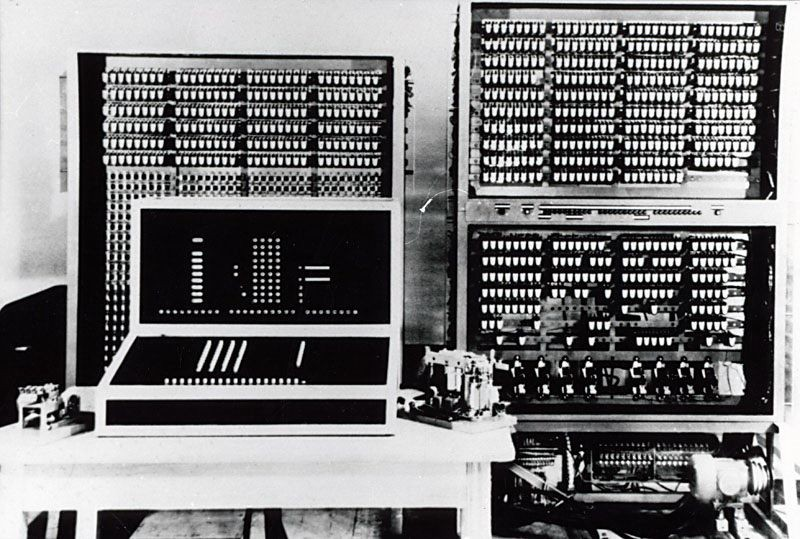

<!DOCTYPE html>
<html lang="en">
  <head>
    <meta charset="utf-8" />
    <meta name="viewport" content="width=device-width, initial-scale=1.0, maximum-scale=1.0, user-scalable=no" />

    <title></title>
    <link rel="stylesheet" href="dist/reveal.css" />
    <link rel="stylesheet" href="dist/theme/simple.css" id="theme" />
    <link rel="stylesheet" href="plugin/highlight/zenburn.css" />
	<link rel="stylesheet" href="css/layout.css" />
	<link rel="stylesheet" href="plugin/customcontrols/style.css">


    <script defer src="dist/fontawesome/all.min.js"></script>

	<script type="text/javascript">
		var forgetPop = true;
		function onPopState(event) {
			if(forgetPop){
				forgetPop = false;
			} else {
				parent.postMessage(event.target.location.href, "app://obsidian.md");
			}
        }
		window.onpopstate = onPopState;
		window.onmessage = event => {
			if(event.data == "reload"){
				window.document.location.reload();
			}
			forgetPop = true;
		}

		function fitElements(){
			const itemsToFit = document.getElementsByClassName('fitText');
			for (const item in itemsToFit) {
				if (Object.hasOwnProperty.call(itemsToFit, item)) {
					var element = itemsToFit[item];
					fitElement(element,1, 1000);
					element.classList.remove('fitText');
				}
			}
		}

		function fitElement(element, start, end){

			let size = (end + start) / 2;
			element.style.fontSize = `${size}px`;

			if(Math.abs(start - end) < 1){
				while(element.scrollHeight > element.offsetHeight){
					size--;
					element.style.fontSize = `${size}px`;
				}
				return;
			}

			if(element.scrollHeight > element.offsetHeight){
				fitElement(element, start, size);
			} else {
				fitElement(element, size, end);
			}		
		}


		document.onreadystatechange = () => {
			fitElements();
			if (document.readyState === 'complete') {
				if (window.location.href.indexOf("?export") != -1){
					parent.postMessage(event.target.location.href, "app://obsidian.md");
				}
				if (window.location.href.indexOf("print-pdf") != -1){
					let stateCheck = setInterval(() => {
						clearInterval(stateCheck);
						window.print();
					}, 250);
				}
			}
	};


        </script>
  </head>
  <body>
    <div class="reveal">
      <div class="slides"><section  data-markdown><script type="text/template"><!-- .slide: class="drop" -->
<div class="" style="position: absolute; left: 0px; top: 0px; height: 700px; width: 960px; min-height: 700px; display: flex; flex-direction: column; align-items: center; justify-content: center" absolute="true">

### Digital, Electronic Computers: Competences & Social Necessities


</div></script></section><section  data-markdown><script type="text/template"><!-- .slide: class="drop" -->
<div class="" style="position: absolute; left: 0px; top: 0px; height: 700px; width: 960px; min-height: 700px; display: flex; flex-direction: column; align-items: center; justify-content: center" absolute="true">

## Competences
</div></script></section><section  data-markdown><script type="text/template"><!-- .slide: class="drop" -->
<div class="" style="position: absolute; left: 0px; top: 0px; height: 700px; width: 960px; min-height: 700px; display: flex; flex-direction: column; align-items: center; justify-content: center" absolute="true">

*machine ratiocinatrix* 

versus 

*nulla nunc celebrior clamorosiorque secta quam Cartesinorum*
</div>

<aside class="notes"><ul>
<li>a machine that thinks? idea starts getting mooted in 17th century, but philosophically, crashes up against the idea that mind and body were separate. For if a machine could think, then it must have a mind.</li>
<li>but also, the elevation of mathematics as the &#39;purest&#39; of sciences: it requires caculating machines, but the idea of a machine that can change its operations based on its calculations - Winston calls this a mental &#39;roadblock&#39; that doesn&#39;t get sorted out in mathematics until 1936</li>
<li>&#39;there is now no sect more famous and great than that of Cartesianism&#39;</li>
</ul>
</aside></script></section><section  data-markdown><script type="text/template"><!-- .slide: class="drop" -->
<div class="" style="position: absolute; left: 0px; top: 0px; height: 700px; width: 960px; min-height: 700px; display: flex; flex-direction: column; align-items: center; justify-content: center" absolute="true">


[Alan Turing](https://turingarchive.kings.cam.ac.uk/)

'[On Computable Numbers, with an application to the *Entscheidungsproblem*](https://ocul-crl.primo.exlibrisgroup.com/permalink/01OCUL_CRL/hgdufh/alma9951907063505162)'
</div>

<aside class="notes"><p>just like everything else in the 19th century, things in mathematics are hotting up. there is a movement to put all of mathematics onto a rational, systematic basis by developing axioms that could be the building blocks of a &#39;total&#39; mathematics. In 1931 Kurt Godel demonstrates that you can&#39;t build a proof around the consistency of a mathematical system that describes all of mathematics</p>
<p>I don&#39;t pretend to understand the mathematics completely, but the upshot is that there are true mathematical statements that cannot be proved from whatever the system is you&#39;re working in. In which case, how can you know if you&#39;re dealing with a problem that cannot be proved? How do you decide what to do? This is the &#39;decidability&#39; problem- Entscheidunsproblem.  Much fighting ensues.</p>
<p>Turing builds a thought experiment, creating a machine to explore this problem</p>
</aside></script></section><section  data-markdown><script type="text/template"><!-- .slide: class="drop" -->
<div class="" style="position: absolute; left: 0px; top: 0px; height: 700px; width: 960px; min-height: 700px; display: flex; flex-direction: column; align-items: center; justify-content: center" absolute="true">

The turing machine

_I'm not even gonna try to illustrate this one because it always does my head in_

[but this is a pretty straightforward explanation of how it works](https://www.futurelearn.com/info/courses/how-computers-work/0/steps/49259)
</div>

<aside class="notes"><ul>
<li>remember too that when he says &#39;computer&#39; he means, a person who computes; he describes how a human computer breaks down a problem into its component parts, and each observation he makes changes his &#39;state&#39; of mind; he makes a direct correlation between a human computer&#39;s state of mind and a particular configuration of his machine.</li>
<li>his machine can read, write, scan &amp; remember binary numbers on a tape. Calls it a &#39;universal engine&#39; in homage to Charles Babbage (remember, most of Babbages writings/Lovelace&#39;s writings about Babbage, weren&#39;t really in broad circulation. He was remembered, but not in detail)</li>
<li>he uses this machine to test if there are any conditions where it can predict if it will fail, and if there are any conditions where it can predict whether a symbol will be printed.</li>
<li>this thought experiment enables him to figure out how to identify such problems; a side effect of his &#39;machine&#39; is that it can compute any computable sequence</li>
<li>thus a machina ratiocinatrix- tying a machine&#39;s state to a human&#39;s state of mind - meant that a thinking machine was possible.</li>
<li>Turing might&#39;ve been first to publish, but not by much. Alonzo Church, Emil Post, publish similar work within <em>months</em> - per Winston, why is this unsurprising?</li>
<li>note also that Turing&#39;s machine depends on Boolean algebra, which reduces logical statements to on/off states.</li>
<li>a turing machine manipulates <em>symbols</em>. That&#39;s the big thing.</li>
</ul>
</aside></script></section><section  data-markdown><script type="text/template"><!-- .slide: class="drop" -->
<div class="" style="position: absolute; left: 0px; top: 0px; height: 700px; width: 960px; min-height: 700px; display: flex; flex-direction: column; align-items: center; justify-content: center" absolute="true">

Shannon again & telephone relays/exchanges
</div>

<aside class="notes"><ul>
<li>Shannon&#39;s work puts the focus not on the content, but the accuracy with which it is transmitted</li>
<li>if information is quantifiable, it can be expressed as a probability/uncertainy</li>
<li>say there&#39;s a horse race, and we have a guy at the end of the course with two different coloured flags to wave to signal which horse won.  a four house race: </li>
<li>Horse 1: red/red; </li>
<li>Horse 2: red/blue</li>
<li>Horse 3: blue/blue</li>
<li>Horse 4: blue/red.  Each wave is on bit: red is a 1 (on), blue is a 0 (off). Thus, four horse race needs 2bits of capacity.</li>
<li>8 horse race you&#39;d need three waves (horse 1: red/red/red, 2 red/red/blue). </li>
<li>8 horse: 3 bits.</li>
<li>16 horse: 4 waves of the flag or 4bit etc.</li>
</ul>
</aside></script></section><section  data-markdown><script type="text/template"><!-- .slide: class="drop" -->
<div class="" style="position: absolute; left: 0px; top: 0px; height: 700px; width: 960px; min-height: 700px; display: flex; flex-direction: column; align-items: center; justify-content: center" absolute="true">

Combine information theory with Turing's 'universal computer' and you have a way for a machine computer to simulate any of the work a human computer could do.
</div>

<aside class="notes"><p>John von Neumann</p>
<ul>
<li>mathematician, significant contributions across multiple fields</li>
<li>heavily involved with Manhattan Project (had expertise on mathematics of shaped explosives), early digital computation; professor with Institute for Advanced Study (in Princeton)</li>
</ul>
<p>In a hugely influential report from 1945, he explicitly makes the connection between the use of telephone relay technologies (circuits) which can be in discrete states, with the way that neurons in animal brains work. Explicitly making the connection between switches/bits/information and cognition (even if we still don&#39;t really understand how that works in the brain)</p>
<ul>
<li>this is also a long tradition in western thought where we think of the human through the metaphor of whatever technology is currently dominant (mechanemorphism)</li>
<li>works the other way to: we talk about computer memory and languages</li>
<li>you get a lot of &#39;electronic brains&#39; in the press of this period. Anyway, we&#39;ll hear more about von Neumann in due course</li>
</ul>
</aside></script></section><section  data-markdown><script type="text/template"><!-- .slide: class="drop" -->
<div class="" style="position: absolute; left: 0px; top: 0px; height: 700px; width: 960px; min-height: 700px; display: flex; flex-direction: column; align-items: center; justify-content: center" absolute="true">

Speaking of metaphors... back to Babbage
</div>

<aside class="notes"><p>Turing knew of Babbage&#39;s work; he framed his language of his &#39;universal machine&#39; in terms that paid hommage to Babbage</p>
<ul>
<li>turing&#39;s machine was to use punch cards<ul>
<li>one set: instructions</li>
<li>other set: data to work on</li>
<li>input data &amp; intervening computations get kept in a &#39;store&#39; - Babbage using language of the weaving industry</li>
<li>the actual computing done in the &#39;mill&#39;. Babbage designs it to do branching operations (logic) by jumping between the mill and support; prints out results 
thing about the analytical engine is that it&#39;s not clear that it could change its program depending on its calculations. This, per Winston, is the central difference between a calculator and a symbol-manipulator(computer). Thus babbage is creating a powerful calculator, and puts him in line with Leibniz, Pascal, and Napier.</li>
</ul>
</li>
<li>and presages the work of Nauckly, Zuse, and Aitken (more on which later, but the image we started with at first was Aitken&#39;s adder)</li>
</ul>
</aside></script></section><section  data-markdown><script type="text/template"><!-- .slide: class="drop" -->
<div class="" style="position: absolute; left: 0px; top: 0px; height: 700px; width: 960px; min-height: 700px; display: flex; flex-direction: column; align-items: center; justify-content: center" absolute="true">

Social Necessity? Not so much.
</div>

<aside class="notes"><p>Georg Scheutz</p>
<ul>
<li>actually builds Babbage&#39;s difference Engine in 1844, making copies of it by 1855</li>
<li>used in labs, some government offices</li>
<li>victorians didn&#39;t really care too much about drudgery: just throw more humans at it</li>
<li>but second half of 19th century, emergence of corporation &amp; other devices starts changing things</li>
</ul>
<p>George Grant - difference engine, size of a piano, exhibits at Philadelphia Exhibit 1876
Hollerith - designs his counter for the 1890 census, using electro-mechanical components, using punch cards, holes, and a wee bit of mercury</p>
</aside></script></section><section  data-markdown><script type="text/template"><!-- .slide: class="drop" -->
<div class="" style="position: absolute; left: 0px; top: 0px; height: 700px; width: 960px; min-height: 700px; display: flex; flex-direction: column; align-items: center; justify-content: center" absolute="true">

<split>


- Parallel kinds of 'computing' devices - the analogue simulators
- Kelvin's tide calculator for different points around the world
- Kelvin proposes in 1876 a way of linking several similar devices together physically to simulate differential equations
- the mechanisms to achieve this not developed until the 1920s.... and Vannevar Bush
</split>
</div>

<aside class="notes"><p>other research groups around the world replicate Bush&#39;s work, and there were about 8 of these analogue computers around the world in the 1930s, including in the US where they were used to calculate ballistic trajectories under different conditions.</p>
</aside></script></section><section  data-markdown><script type="text/template"><!-- .slide: class="drop" -->
<div class="" style="position: absolute; left: 0px; top: 0px; height: 700px; width: 960px; min-height: 700px; display: flex; flex-direction: column; align-items: center; justify-content: center" absolute="true">

'programming' these machines: 
- literally bashing them into different shapes with hammers and wrenches. 
- useful for scientific analysis
</div>

<aside class="notes"><p>ibm counters and tabulators meeting business needs - ibm 600 could add,subtract and multiply, for instance. other machines (prototypes) could retrieve and photocopy data held on 35 mm film (developed by Kodak and National Cash Reigster) </p>
<ul>
<li>thus, business had sophisticated machines, academics had sophisticated machines, no real burning market need for a machine that could alter its own program</li>
<li>(in a perversion of the idea of &#39;social necessity&#39;) -&gt;  Edwin Black&#39;s &#39;ibm &amp; the holocaust&#39; argues- ibm selling lots of tabulators and counting machines in europe, german second biggest market for IBM: German gov&#39;t a buyer - ibm happy to sell despite calls for boycots, pumping money into its german subsideray to help with 1933 german census, which Nazis used to start ethnic identity programs. similar punch card techs used in the camps to keep track, manage.... without IBM actively selling this stuff, one can imagine genocide would&#39;ve been harder to commit. IBM does not admit any wrongdoing.</li>
</ul>
</aside></script></section><section  data-markdown><script type="text/template"><!-- .slide: class="drop" -->
<div class="" style="position: absolute; left: 0px; top: 0px; height: 700px; width: 960px; min-height: 700px; display: flex; flex-direction: column; align-items: center; justify-content: center" absolute="true">

George Stibitz (Bell Labs) - 1937


</div>

<aside class="notes"><p>Leondardo Torres y Quevedo - 1915 (uses a typewriter for input!) - suggests using telephone switches to control the operation of his mechanical calculator
Stibitz - 1937 uses telephone relays over a weekend to wire a simple logic cirucit to perform binary addition - wins him some funding to build the first complex calculator, the Model 1 - finished by 1940</p>
<ul>
<li>he does a demo where he performs a remote calculation on the Model 1 OVER A TELEPHONE LINE from Dartmouth to New York (nine teen freakin&#39; forty!)</li>
<li>over the war, he builds four subsequent specialized electro-mechanical calculators, each one more sophisticated, but still tuned for one particular task - model 2 tested anti aircraft detectors. model 3 anit aircraft ballistics. by 1950 this line of research is more or less eclipsed by all electrical machines</li>
</ul>
</aside></script></section><section  data-markdown><script type="text/template"><!-- .slide: class="drop" -->
<div class="" style="position: absolute; left: 0px; top: 0px; height: 700px; width: 960px; min-height: 700px; display: flex; flex-direction: column; align-items: center; justify-content: center" absolute="true">

Konrad Zuse - 1936


</div>

<aside class="notes"><ul>
<li>starts building electro-mechanical binary calculators from telephone parts (bored with his day-job at an engineering firm)</li>
<li>achieves no business success with these</li>
<li>1939 joins the Wehrmacht; the Aerodynamics Research Institute spots his calculator work, by relieves him from active duty, sends him back to his engineering job to build the S1, a calculator to speed missile production</li>
<li>by 1943, with support from Air Ministry, he starts his own firm, develops the Z3<ul>
<li>programmable but uses 35 mm film with holes in it</li>
<li>can store 64 binary digits</li>
</ul>
</li>
<li>flees Berlin in 1945 with his Z4 machine on a truck; captured near Austrian border</li>
</ul>
</aside></script></section><section  data-markdown><script type="text/template"><!-- .slide: class="drop" -->
<div class="" style="position: absolute; left: 0px; top: 0px; height: 700px; width: 960px; min-height: 700px; display: flex; flex-direction: column; align-items: center; justify-content: center" absolute="true">

Howard Aitken


- prof at Harvard. Had designed his own electro-mechanical calculator to help with his thesis work; proposes the machine to the military in 1937; military says nah, though its own reviewing engineer wanted it; engineer introduces Aitken to IBM & Thomas Watson (president)
</div>

<aside class="notes"><p>remember Watson was the salesman who turned Hollerith&#39;s company into a juggernaut; Watson gave a bunch of machines to Columbia for a &#39;statistical bureau&#39; but was more of an advertisement. It was through that connection that Aitken meets Watson</p>
<ul>
<li>watson saw Aitken as a possible way into selling the Navy tabulating machines; he couldn&#39;t really care less about computation</li>
<li>1939 navy &amp; IBM fund Aitken to build electromagentic machine at Harvard (gets made a Naval Commander); his staff all come from the Navy too, including in 1942 Grace Hopper. We&#39;ll talk more about her in a moment.</li>
<li>the first machine, Mark 1, given to Harvard as a gift; he wanted an honorary degree from Harvard, which ignored him. Watson views all this as public relations, doesn&#39;t get the payoff, and is pissed. Aitken sees Watson as a nuiscane.</li>
<li>technologically, similar to the Z3 and the Bell Model 2; nothing new invented other than ways of connecting together existing pieces.</li>
<li>had a tape on which a program could be made, but again, not fully a computer. Just souped up calculators. IBM does nothing with this intellectual property.</li>
</ul>
</aside></script></section><section  data-markdown><script type="text/template"><!-- .slide: class="drop" -->
<div class="" style="position: absolute; left: 0px; top: 0px; height: 700px; width: 960px; min-height: 700px; display: flex; flex-direction: column; align-items: center; justify-content: center" absolute="true">

Existing 'social necessity' good enough for electrico-mechanical calculators, not enough for all-purpose general computers
</div>

<aside class="notes"><p>these machines worked, they did the calculations, they could be tuned towards different tasks, but they didn&#39;t operate on symbols, they didn&#39;t change their programming in reaction to their own calculations. But the second world war and then the emergent cold war would finally provide the impetus, pulling all of these strands we&#39;ve been talking about this term together.</p>
</aside></script></section><section  data-markdown><script type="text/template"><!-- .slide: class="drop" -->
<div class="" style="position: absolute; left: 0px; top: 0px; height: 700px; width: 960px; min-height: 700px; display: flex; flex-direction: column; align-items: center; justify-content: center" absolute="true">

Ballistics


<small>

- the industrialization of war over the 19th century - new types of guns (ie, field guns - cannons etc), new types of firepower
- Reverend Francis Bashforth, 1864-1880 - experiments related to air drag and velocity - produces the first firing tables
- US military, in aftermath of civial war, establishs testing range to train ballistic officers and work out tables for different kinds of guns

</small>
</div>

<aside class="notes"><p>if you have a gun, you have to know precisely what angle, how much powder, wind, temperature, humidity, etc to drop the shell onto the enemy. &#39;up a bit&#39; doesn&#39;t cut it anymore.</p>
<ul>
<li>these tables all calculated by hand, by human computers - typically women - naval observatory, &#39;harem&#39; guy, late 19th/early20th</li>
<li>more guns, more conditions of use emerging during the war than the computers could keep up with</li>
<li>had to tabulate dozens of factors for 1000s of possible trajectories; each one a half day&#39;s work. &#39;kilogirls&#39; - cheeky unit-of-measurment of 1000 hours of work by a woman computer</li>
<li>15 tables being produced a week, but they needed 40.</li>
<li>this the social necessity for a machine called ENIAC</li>
</ul>
</aside></script></section><section  data-markdown><script type="text/template"><!-- .slide: class="drop" -->
<div class="" style="position: absolute; left: 0px; top: 0px; height: 700px; width: 960px; min-height: 700px; display: flex; flex-direction: column; align-items: center; justify-content: center" absolute="true">

Mauchly & ENIAC


- Electronic Numerical Integrator and Calculator/Computer
</div>

<aside class="notes"><p>Prof at Urinus College; was interested in meteorology; despairing of all the calculations, took a summer course at Moore School of Electrical Engineering in 1941 to learn about electronic devices. In 1940, had heard a paper by John Atanasoff describing the design of an electronic calculator he was building, that instead of relays, would use vacuum tube valves. In the summer of 1941, Mauchly visits Atanasoff and learns more about it.</p>
<p>After his time at Moore School, Mauchly gets a faculty post there; invites Atanasoff to join. A declines. In 1942, Mauchly writes a memo &#39;The Use of High Speed Vaccum Tube Devices for Calculating&#39;</p>
<ul>
<li>this memo gets lost. But Herman Goldstine naval attache officer working at the moore school - overseeing ballist firing table generation on an analogue differential analyzer - mentions it to the operator as perhaps a better way of doing this.</li>
</ul>
<p>they go looking, can&#39;t find it: it&#39;s 1943 now- Mauchly&#39;s secretary reconstructs the memo from her shorthand dictation notebook! and presents it Oswald Veblen (connection to neumann - Veblen was at Institute for Advanced STudy from 1932 onwards) who oversaw the Ballistics Research Laboratory - &#39;give him the money!&#39; </p>
<p>Goldstine and Mauchly write a detailed proposal &amp; costing by 1943; work began that June. Brings in Presper Eckert (who handled a lot of the valve work) - 17 000 tubes, 100 000 pulses a second, therefore 1.7 billion opportunities to break down every second!!!</p>
<p>took 3 years to build (war rationing). By 1945, it was ready for testing. They do a public unveiling, setting up a ballistics question for it to calculate in front of a live audience - which it did, taking 20 seconds, or shorter than the actual calculated shell would&#39;ve flown! They also made a point of saying that the &#39;girls&#39; could compute this in 3 days, the differential analyzer in 30 minutes, ENIAC in 20 seconds.  The first programmable, electronic, general purpose computer. (although a court case in 1974 would say the Atanasoff was the first)</p>
<p><a href="https://www.seas.upenn.edu/about/history-heritage/eniac/">more about eniac here</a></p>
</aside></script></section><section  data-markdown><script type="text/template"><!-- .slide: class="drop" -->
<div class="" style="position: absolute; left: 0px; top: 0px; height: 700px; width: 960px; min-height: 700px; display: flex; flex-direction: column; align-items: center; justify-content: center" absolute="true">

<div align="left">
This demonstration ignored something quite crucial.

WHO did the programming? 

HOW LONG did it take to set the program up?

[Consider what the newspapers said at the time](https://chroniclingamerica.loc.gov/search/pages/results/?state=&date1=1777&date2=1946&proxtext=ENIAC&x=18&y=22&dateFilterType=yearRange&rows=20&searchType=basic)

</div>
</div></script></section><section  data-markdown><script type="text/template"><!-- .slide: class="drop" -->
<div class="" style="position: absolute; left: 0px; top: 0px; height: 700px; width: 960px; min-height: 700px; display: flex; flex-direction: column; align-items: center; justify-content: center" absolute="true">

<split>


</split>
</div></script></section><section  data-markdown><script type="text/template"><!-- .slide: class="drop" -->
<div class="" style="position: absolute; left: 0px; top: 0px; height: 700px; width: 960px; min-height: 700px; display: flex; flex-direction: column; align-items: center; justify-content: center" absolute="true">

### **_Wanted: Women With Degrees in Mathematics . . . Women are being offered scientific and engineering jobs where formerly men were preferred. Now is the time to consider your job in science and engineering… You will find that the slogan here as elsewhere is ‘WOMEN WANTED!_**
- Department of Labor's Women's Bureau
</div></script></section><section  data-markdown><script type="text/template"><!-- .slide: class="drop" -->
<div class="" style="position: absolute; left: 0px; top: 0px; height: 700px; width: 960px; min-height: 700px; display: flex; flex-direction: column; align-items: center; justify-content: center" absolute="true">


</div>

<aside class="notes"><ul>
<li>prevailing sexism of all of this: computers were girls; they broke the problem up and did the math; our machine can do math; the girls can figure out how to put the problem on it.</li>
</ul>
<p>This requires <em>incredible sophistication</em> and understanding of both pure mathematics AND engineering.</p>
</aside></script></section><section  data-markdown><script type="text/template"><!-- .slide: class="drop" -->
<div class="" style="position: absolute; left: 0px; top: 0px; height: 700px; width: 960px; min-height: 700px; display: flex; flex-direction: column; align-items: center; justify-content: center" absolute="true">

Harvard Observatory


</div>

<aside class="notes"><ul>
<li>1881 Pickering didn&#39;t like work ethic of his hired help, so hired his housemaid as a computer-Wilhelmina Fleming. Fleming eventually supervises 80 other women over 36 years working </li>
<li>these women were skilled &amp; talented mathematicians, astronomers</li>
</ul>
</aside></script></section><section  data-markdown><script type="text/template"><!-- .slide: class="drop" -->
<div class="" style="position: absolute; left: 0px; top: 0px; height: 700px; width: 960px; min-height: 700px; display: flex; flex-direction: column; align-items: center; justify-content: center" absolute="true">

## Programming - Competences
</div></script></section><section  data-markdown><script type="text/template"><!-- .slide: class="drop" -->
<div class="" style="position: absolute; left: 0px; top: 0px; height: 700px; width: 960px; min-height: 700px; display: flex; flex-direction: column; align-items: center; justify-content: center" absolute="true">


Padua, 2015. [The thrilling adventures of Lovelace and Babbage](https://ocul-crl.primo.exlibrisgroup.com/permalink/01OCUL_CRL/hgdufh/alma991911485105151)
</div></script></section><section  data-markdown><script type="text/template"><!-- .slide: class="drop" -->
<div class="" style="position: absolute; left: 0px; top: 0px; height: 700px; width: 960px; min-height: 700px; display: flex; flex-direction: column; align-items: center; justify-content: center" absolute="true">


</div>

<aside class="notes"><p>Lovelace can&#39;t publish her thoughts on the engine on her own; but she can translate the work of the italian scholar Menebrae, who heard Babbage talk in Turin (he was there to drum up finances to give it all a go) and wrote his own thoughts. Lovelace translates the work, but then annotates it with so much of her own work that she wrote triple the length of the original article. In it she describes how to set Babbage&#39;s engine in train, in order to calculate such things as Bernoulli numbers; conceptualizes how other kinds of things might get computed - ie, thinking in terms of symbolic logic. HOWEVER, she dies at 36 years of age (uterine cancer) and her work for most part fades away (becomes known again in 20th century). But in order to program the machine, she had to understand its engineering completely. Babbage jus had to figure out how to add, subtract, etc. Lovelace had the harder job.</p>
</aside></script></section><section  data-markdown><script type="text/template"><!-- .slide: class="drop" -->
<div class="" style="position: absolute; left: 0px; top: 0px; height: 700px; width: 960px; min-height: 700px; display: flex; flex-direction: column; align-items: center; justify-content: center" absolute="true">

Grace Hopper


</div>

<aside class="notes"><p>Mathematics prof at Vassar, joins the war effort in the Navy; because Aiken and the mark 1 are being funded partially by the navy, she ends up working for him. Day 1, he hands her a complex set of equations and says, &#39;figure it out, you have one week.&#39;</p>
<ul>
<li>studies wiring diagrams, card reader manuals, whatever technical schematics exist - even in the face of &#39;hey you&#39;re a woman&#39;- mark 1 is a paper tape machine, so every alogirthm is linear, no loops; writes the freakin&#39; manual for this machine and its successors - 500 pgs! - doesn&#39;t even get her name on it. Trains other women too.</li>
</ul>
</aside></script></section><section  data-markdown><script type="text/template"><!-- .slide: class="drop" -->
<div class="" style="position: absolute; left: 0px; top: 0px; height: 700px; width: 960px; min-height: 700px; display: flex; flex-direction: column; align-items: center; justify-content: center" absolute="true">


</div>

<aside class="notes"><p>use of &#39;bug&#39; to indicate something gone wrong in machinery had been used for decades, does not originate in computing, but this was perhaps the first literal case of a programming bug.</p>
</aside></script></section><section  data-markdown><script type="text/template"><!-- .slide: class="drop" -->
<div class="" style="position: absolute; left: 0px; top: 0px; height: 700px; width: 960px; min-height: 700px; display: flex; flex-direction: column; align-items: center; justify-content: center" absolute="true">

ENIAC SIX

<split even>


</split>

<small> 

Betty Holberton, Jean Jennings Bartik, Kay McNulty, Marlyn Wescoff Meltzer, Ruth Lichterman, and Frances Bilas Spence

</small>
</div>

<aside class="notes"><p>Kleiman: They had to track each piece of data, wire it into a panel, such as a multiplier or a ‘square rooter,’ and then move the result — physically by wire — to another panel for storage,” she said.</p>
<p>The women kept track of the steps and diagrams for the wires manually on what they called “pedaling sheets.” As Bartik described it: “ENIAC was a son of a b— to program,” she said in the documentary “<a href="http://eniacprogrammers.org/">The Computers</a>.” Eniac could handle branching logic and loops. These women write the first algorithms that could write their own algorithms! they come up with idea of subroutines and packaging little pieces of code together for reuse, assigning symbolic letters/numbers to these, to speed up programming work. Grace Hopper comes to work with the MCC company; horizontally flat company, women there in lots of positions of authority; MCC isn&#39;t a good business though. Bought by Rand in 1950; now the women have to work in a hierarchy and report to men who don&#39;t understand what&#39;s going on. The salesmen can&#39;t figure out how to sell the machines, so the women do that too. AND the women provide the tech support to the clients so that they can get their machines to do whatever they want. Rand only figures they&#39;ll build 6 machines a year; in the first two years, the women sell 42 machines. These women built programming, they built support, they built sales, they built use cases and business cases for the existence of the machines. (Rand gets bought out in 1955 by Sperry, becomes Sperry Rand)</p>
<p>my point - the work that no one valued - the actual operation of things, the doing of the tedious calculations - that gets coded &#39;female&#39; very early on, and while everything depends upon it, no one in power treats it as important. But by tying it to digital computing, it becomes a superpower, and so a pattern repeats itself: women are devalued, pushed out. They end up training their (male) replacements.</p>
</aside></script></section><section  data-markdown><script type="text/template"><!-- .slide: class="drop" -->
<div class="" style="position: absolute; left: 0px; top: 0px; height: 700px; width: 960px; min-height: 700px; display: flex; flex-direction: column; align-items: center; justify-content: center" absolute="true">

<iframe width="560" height="315" src="https://www.youtube.com/embed/Zevt2blQyVs" title="YouTube video player" frameborder="0" allow="accelerometer; autoplay; clipboard-write; encrypted-media; gyroscope; picture-in-picture; web-share" allowfullscreen></iframe>
Watch on your own time - The Secret History of the ENIAC Women - Kathy Kleiman. 

[or checkout her book, 'Proving Ground'](https://books.google.ca/books?hl=en&lr=&id=9PWBEAAAQBAJ&oi=fnd&pg=PT32&dq=kleiman+eniac&ots=33P53v18lm&sig=GU_2bD2hz7HRZUz5C-cB-YMvgjw&redir_esc=y#v=onepage&q=kleiman%20eniac&f=false)
</div>

<aside class="notes"><p>They weren&#39;t even invited to the 50th anniversary of ENIAC!</p>
</aside></script></section><section  data-markdown><script type="text/template"><!-- .slide: class="drop" -->
<div class="" style="position: absolute; left: 0px; top: 0px; height: 700px; width: 960px; min-height: 700px; display: flex; flex-direction: column; align-items: center; justify-content: center" absolute="true">

We're now in the period of digital incunabula

The missing supervening social necessity? Nuclear War
</div>

<aside class="notes"><p>We&#39;ll take a detour to see what has been happening in Britain at this same period - Alan Turing, the BOMBE, COLOSSUS, and the way the British squandered their computing prowess on the twin alters of class &amp; misogyny.</p>
<p>von Neumann got a team of Manhattan project (from Los Alamos) came w/ a problem for ENIAC to calculate - related to the bom, and I <em>think</em> the shaping of the implossive charge that triggers fission.</p>
</aside></script></section><section  data-markdown><script type="text/template"><!-- .slide: class="drop" -->
<div class="" style="position: absolute; left: 0px; top: 0px; height: 700px; width: 960px; min-height: 700px; display: flex; flex-direction: column; align-items: center; justify-content: center" absolute="true">

March 10: 2nd Assessment of your Memex

a kind suggestion:

- a note indicating how you respond to the feedback on the first is a good idea
</div></script></section><section  data-markdown><script type="text/template"><!-- .slide: class="drop" -->
<div class="" style="position: absolute; left: 0px; top: 0px; height: 700px; width: 960px; min-height: 700px; display: flex; flex-direction: column; align-items: center; justify-content: center" absolute="true">

Wednesday -
- von Neuman and what a computer should look like
	- consequences of that decision 
<Br><br>
- a myth around the creation of the internet
	- competences & social necessities & other interesting things
</div></script></section></div>
    </div>

    <script src="dist/reveal.js"></script>

    <script src="plugin/markdown/markdown.js"></script>
    <script src="plugin/highlight/highlight.js"></script>
    <script src="plugin/zoom/zoom.js"></script>
    <script src="plugin/notes/notes.js"></script>
    <script src="plugin/math/math.js"></script>
	<script src="plugin/mermaid/mermaid.js"></script>
	<script src="plugin/chart/chart.min.js"></script>
	<script src="plugin/chart/plugin.js"></script>
	<script src="plugin/customcontrols/plugin.js"></script>

    <script>
      function extend() {
        var target = {};
        for (var i = 0; i < arguments.length; i++) {
          var source = arguments[i];
          for (var key in source) {
            if (source.hasOwnProperty(key)) {
              target[key] = source[key];
            }
          }
        }
        return target;
      }

	  function isLight(color) {
		let hex = color.replace('#', '');

		// convert #fff => #ffffff
		if(hex.length == 3){
			hex = `${hex[0]}${hex[0]}${hex[1]}${hex[1]}${hex[2]}${hex[2]}`;
		}

		const c_r = parseInt(hex.substr(0, 2), 16);
		const c_g = parseInt(hex.substr(2, 2), 16);
		const c_b = parseInt(hex.substr(4, 2), 16);
		const brightness = ((c_r * 299) + (c_g * 587) + (c_b * 114)) / 1000;
		return brightness > 155;
	}

	var bgColor = getComputedStyle(document.documentElement).getPropertyValue('--r-background-color').trim();
	var isLight = isLight(bgColor);

	if(isLight){
		document.body.classList.add('has-light-background');
	} else {
		document.body.classList.add('has-dark-background');
	}

      // default options to init reveal.js
      var defaultOptions = {
        controls: true,
        progress: true,
        history: true,
        center: true,
        transition: 'default', // none/fade/slide/convex/concave/zoom
        plugins: [
          RevealMarkdown,
          RevealHighlight,
          RevealZoom,
          RevealNotes,
          RevealMath.MathJax3,
		  RevealMermaid,
		  RevealChart,
		  RevealCustomControls,
        ],


    	allottedTime: 120 * 1000,

		mathjax3: {
			mathjax: 'plugin/math/mathjax/tex-mml-chtml.js',
		},
		markdown: {
		  gfm: true,
		  mangle: true,
		  pedantic: false,
		  smartLists: false,
		  smartypants: false,
		},

		mermaid: {
			theme: isLight ? 'default' : 'dark',
		},

		customcontrols: {
			controls: [
			]
		},
      };

      // options from URL query string
      var queryOptions = Reveal().getQueryHash() || {};

      var options = extend(defaultOptions, {"width":960,"height":700,"margin":0.04,"controls":true,"progress":true,"slideNumber":false,"transition":"fade","transitionSpeed":"default"}, queryOptions);
    </script>

    <script>
      Reveal.initialize(options);
    </script>
  </body>

  <!-- created with Advanced Slides -->
</html>
